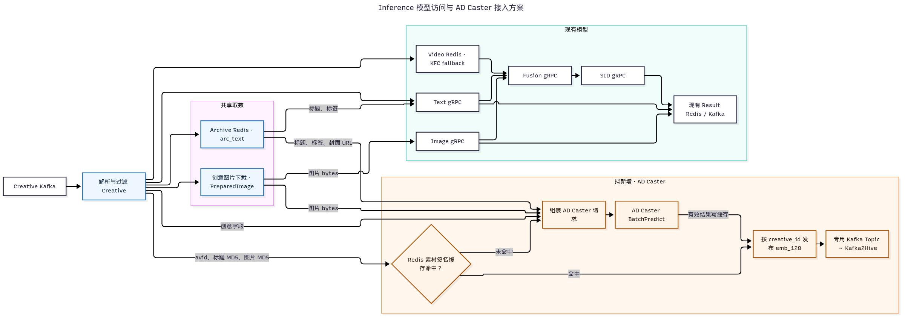

Inference 模型访问与 AD Caster 接入方案
AD Caster 在现有 Inference 中并行接入。两路模型复用同一条 Creative、同一份稿件快照和同一份创意图片。

- 创意图片只下载一次。AD Caster 在素材签名缓存未命中时按需下载稿件封面。
avid=0或 Archive Redis 未命中时，稿件输入按缺省处理。 - AD Caster 独立执行缓存查询、模型调用和 Kafka 发布。缓存命中和推理成功都按
creative_id发布emb_128，供 Kafka2Hive 消费。
AD Caster 分支是接入方案。队列满时的处理方式待定。